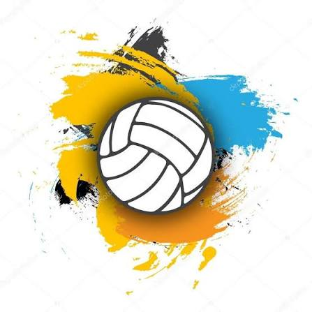

Meu primeiro post
Por: thulyani
Boas-vindas ao meu blog, vou compartilhar varias curiosidades, comecei a jogar volei apartir dos meus 12 anos na minha escola, jogo na posição de libero, o time vai varias vezes em campionatos, em jogos ecolares